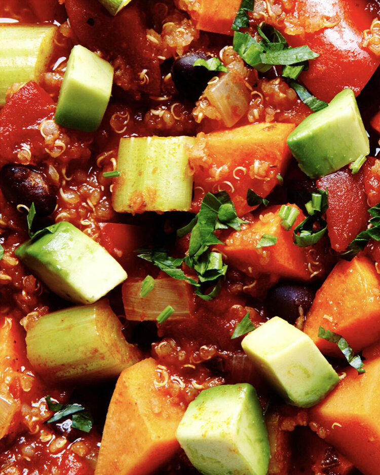

Sweet Potato Quinoa Chili

Dinner Recipe
We’re crazy for quinoa. While you might scoff at jumping on the quinoa bandwagon, there’s nothing new (think: 4,000 years old) about this Super Grain. Not only does it pack a nutritional punch (protein and amino acids and anti-aging, Oh My!), but this glorious grain also serves as the foundation for this easy, scrumptious Sweet Potato Quinoa Chili. Tender sweet potatoes, carrots, celery and red peppers are simmered along with cumin, chili powder and cayenne to create a most flavorful, satisfying meal-in-a-bowl.
Ingredients
- 1 cup quinoa, rinsed
- 2 cups water
- 1 tbsp olive oil
- 1 medium yellow onion, chopped
- 2 large garlic cloves, minced
- 3 celery stalks, chopped
- 2 large carrots, peeled and chopped
- 2 medium sweet potatoes, peeled and cubed
- 1 red bell pepper, chopped
- 2 tsp ground cumin
- 2 tsp chili powder
- ½ tsp paprika
- ½ tsp kosher salt
- ½ tsp freshly ground black pepper
- Pinch cayenne pepper
- 1(15oz) can black beans, rinsed and drained
- 4 cups vegetable broth
- 2 cups tomato sauce
- 1(28oz) can diced tomatoes
- 2 tbsp fresh lime juice
- Chopped Italian flat leaf parsley, for garnish
- Cubed avocado, for garnish
Steps
- Combine quinoa and water in a medium saucepan. Bring to a boil over high heat, reduce to low, cover and simmer for 15 minutes until all liquid is absorbed. Set aside.
- For the chili, in a large stockpot, heat olive oil over medium heat. Stir in the onions, garlic, celery, carrots, sweet potatoes and red peppers. Cook and stir until vegetables are tender, about 5 minutes. Add ground cumin, chili powder, paprika, salt, pepper and cayenne. Cook, stirring occasionally, for an additional 5 minutes. Add cooked quinoa, black beans, vegetable broth, tomato sauce, diced tomatoes and lime juice. Bring to a boil over high heat. Reduce heat to low and simmer uncovered for 30 minutes, stirring occasionally. Serve in bowls and garnish with parsley and avocado.